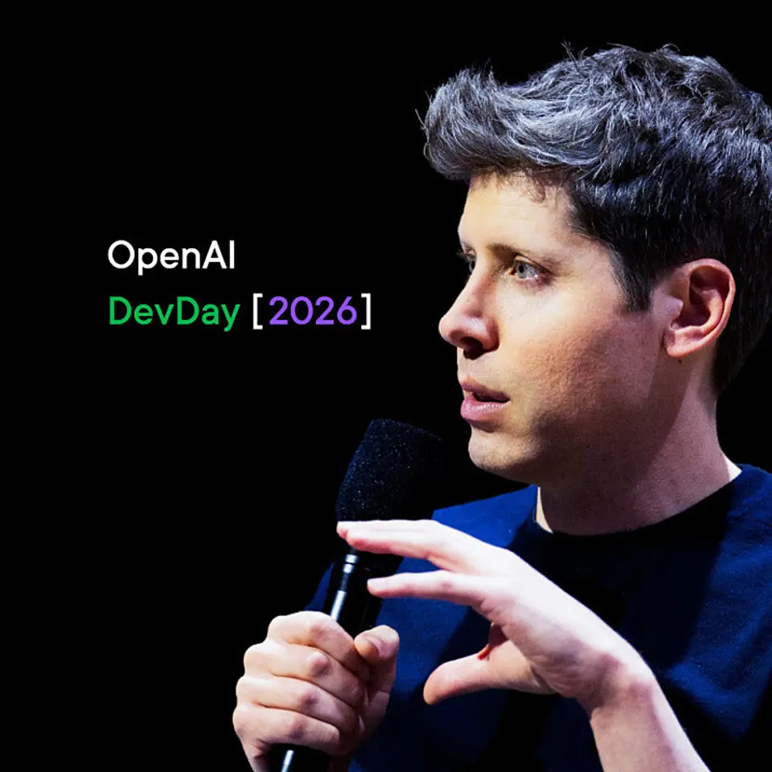
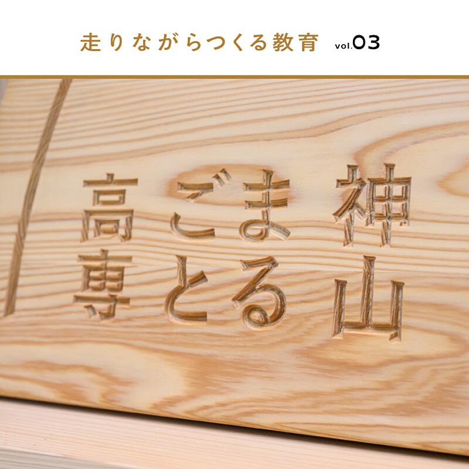

01【匿名座談会】最近、家を買う人が呪われている
発行日時：2026年9月30日 05:30 JST
あなたに関係ありそうな理由
売買・賃貸管理の現場で、相場観だけでは見落としやすい融資、建物条件、売却時の出口を整理する材料になります。
概要
住宅業界の実務者3人による匿名座談会を通じ、いま家を買う人が陥りやすい七つの判断のゆがみを扱った記事である。中心にあるのは、住むための家と投資対象を混同しやすくなったことだ。数年前に買った人の売却益が目立つため、15年ほど住む予定の人まで、都心・狭小・高額の物件を「資産価値が落ちないから」と選びがちになる。しかし、売却する時期、家族の生活、次の買い手が使えるローンまでを置いたとき、その判断が本人の暮らしに合っているとは限らない。再開発も、名前だけで価格上昇を約束するものではなく、実際の生活圏や街全体の相場と切り分けて見る必要がある。
売却価格をめぐる話も具体的だ。通常は1億円から1億3000万円程度と見られる物件に、媒介を取るため1億7000万円を示し、売れなければ段階的に下げる例が語られる。価格を高く出している間に金利が上がれば、同じ買い手でも借りられる額が1億3000万円から1億2000万円へ下がり得る。AI査定も、面積や地域だけで算出した数字を鵜呑みにできない。記事には、実勢と大きく離れた査定額が示された例がある。公開中の売り出し価格と、実際に成約した価格は別物であり、室内の状態や階数、眺望、管理の状況までを確認しなければ判断を誤る。
金利上昇では、毎月返済額だけでなく、金融機関の審査で使う金利や次の買い手の借入可能額が重要になる。50年ローンや旧耐震物件は、将来の買い手が融資を受けにくくなる懸念もある。私道の通行・工事条件を見落とし、建築時に約1000万円の追加費用が必要になったケースも紹介された。表示コメントでは、契約前に施工会社へ条件と見積もりを確認することは安い保険になり得るという論点が出た。住宅ローンが通ることは、将来も同じ価格で売れる保証ではない。取得後に発生する管理・修繕の負担も、長期の資金計画に入れたい。目的が違えば、選ぶ物件も変わる。住まいを買う判断では、広告上の値段や上昇期待を先に置かず、現在の生活に必要な広さ、返済余力、売却・賃貸の出口、修繕や工事の条件を同じ表で確かめたい。記事は不動産を一律に危険視するのではなく、物件・資金・時間軸を分けて検証する必要を示している。
仕事や会話で使える一言
「買値の期待より、次の買い手が使えるローンまで見ておきたいですね。」
NewsPicks原文を読む
02【解説】過去最大の赤字。電通の「復活策」を読み解く
発行日時：2026年9月30日 05:30 JST
あなたに関係ありそうな理由
国内で伸びる事業と海外の減損・統合問題を分け、再建策を人員削減だけで評価しない見方を得られます。
概要
電通グループは2025年12月期に3276億円の純損失を計上し、過去最大の赤字となった。海外事業で取得したのれんの減損が主因で、配当は見送られた。2026年3月に佐野晃氏が社長に就き、2026年も無配を見込むなかで、記事は「復活」の根拠と未解決の点を切り分ける。日本事業は上期のオーガニック成長率が5％を超え、調整後営業利益も過去最高となった一方、グループ全体は前年同期比でマイナスだった。国内の回復と海外の構造問題を一つの数字でならしてしまうと、再建の進み具合を読み違える。
海外では2013年以降に100社を超える買収を進め、売上総利益の6割を海外が占めるまでになった。しかし統合やシナジーが十分に進まず、2025年10〜12月期には3101億円ののれん減損を計上した。上期の海外3地域はいずれもオーガニック成長がマイナスである。対策として、2027年までに約3400人の人員削減を計画し、2026年上期までに約3000人を進めた。さらに本社コストを2028年までに2026年計画比で3割削減し、法人数も縮小する方針だ。だが、組織を軽くすることと、顧客に届く価値を再び作れることは別の課題である。
国内ではインターネット広告費が2025年に4兆459億円となり、総広告費の50.2％を占めた。電通の同分野の売上は2479億円で前年同期比15.8％増、セプテーニとの協業も伸びた。小売りの購買データを使うリテールメディアは2025年の6066億円から2029年に1兆3174億円へ拡大する見通しとされ、同社は専門組織や流通企業との連携を進める。また国内の売上総利益では広告以外が約4割を占め、BXやAIを用いた企画支援にも投資する。国内の好調だけで海外の減損問題を埋めたと判断するのは早い。表示コメントでは、国内の統合経験を海外に移せるかが再建の分岐点だという指摘があった。人員数や減損額だけで回復を断定せず、海外の顧客基盤をどう再編するか、国内の成長分野でどの程度利益を積み上げられるか、買収先をまたぐ協業が実際に起きるかを追うべきだ。記事は、削減計画の発表を再生の完了ではなく、実行力が試される出発点として捉えている。
仕事や会話で使える一言
「固定費を減らす話と、顧客価値を作り直す話は分けて見ましょう。」
NewsPicks原文を読む
03【速報】OpenAIが新たに打ち出した「爆速AI」の正体
発行日時：2026年9月30日 07:00 JST

あなたに関係ありそうな理由
モデル性能だけでなく、AIが常時作業する環境、利用料金、接続先、統制をどう設計するかを考える材料になります。
概要
OpenAIの開発者イベント「DevDay 2026」で発表されたのは、単に新モデルを速くした話ではない。記事は、24時間動くAIエージェント「dots」、人とdotsが共有して作業する「ChatGPT Space」、性能と価格の幅を広げるモデル群を、一つの作業基盤として整理する。dotsはGPT-6 Astraを使い、4000以上のアプリと接続して、依頼された仕事をクラウドで継続できる構想だ。Pro、Business Premium、Enterprise、Eduで段階的に提供され、管理者の有効化が必要なプランもある。人が都度画面を操作するだけでなく、仕事を任せて途中を確認する利用へ軸足が移る。
モデル面では、GPT-6.1 SolをAstraに近い知能を5分の1の価格で提供する選択肢として位置づけた。Astraの高速モード「Ultrafast」は、Codexで標準の最大8倍、Astra Fastの最大4倍という速度を掲げ、APIでも高速化をうたう。記事では、Pro 500の月額は500ドルで、Pro 200の利用枠は10月30日に半減すると説明する。速度や単価が改善しても、全員が同じ使い方をできるわけではない。自社にとって必要な作業の頻度、失敗した時の影響、費用上限を先に決めないと、便利さだけが先行する。
開発者向けには、判断を扱うDecisions API、初回応答時間を45％短縮したResponses API、永続的な実行環境を持つCloud Codexが示された。Agent365やAWS Bedrock Managed Agents、外部サービスとの接続、マーケットプレイスも並び、OpenAIは単体の会話AIから、他社の仕事道具へ組み込まれる基盤を目指している。記事は、収益化や高額プランへの疑問、軍・移民執行機関との契約に対する抗議、安全面の説明不足も併記する。表示コメントでも、ベンチマークの数字だけでなく、意図通りに動かす統制、セキュリティ、コンプライアンスが導入の壁になるという論点があった。導入する側は、どのデータに触れさせるか、権限をどこまで渡すか、実行履歴を誰が見直すかを設計して初めて、速度を成果へつなげられる。速いAIを採るかより、速く動いても止められる業務にするかが重要である。
仕事や会話で使える一言
「速く任せる前に、権限・記録・止め方を決めておきたいですね。」
NewsPicks原文を読む
04AI時代に価値を上げる「体で書く文章」とは
発行日時：2026年9月30日 05:20 JST
あなたに関係ありそうな理由
AIで文章を速く作れる時代に、社内文書や対外発信で人が引き受ける経験・判断・責任を見直すきっかけになります。
概要
応用言語学者の金善佑氏への取材を通じ、AIが流暢な文章を大量に作れる時代に、書く行為の価値を問い直す記事である。金氏は、言葉には書き手自身の人生や経験が染み込むと説明する。文法的に正しく、要点が整った文章でも、誰が何を見て、どう迷い、何を引き受けて書いたかが抜ければ、読む側に平板に感じられることがある。著書が2年で10刷となった背景には、文章を上達させる技法だけでなく、書くことで自分の思考と経験を確かめたいという読者の需要がある。
記事が使う「体で書く」は、感情的な文章を優先する意味ではない。自分の身体で経験したこと、記憶していること、今この場で考えたことを土台に、言葉を選ぶことを指す。AIが10分で長文を出せても、読む人が理解に1時間かかるなら、作り手と受け手の時間は対称ではない。内容の薄い生成文、いわゆるAI slopは、読む人へ見分ける負担を渡してしまう。情報を短く処理する文章と、感情や経験を届ける文章では、作り手と読み手が求めるものも違うため、一つの基準で良し悪しを決められない。
金氏は、読むことも書くことも、完成品を作るだけではなく、他者の世界へ入り、自分の考えを変えていく「なる」行為だと捉える。職場の文書でも、不特定多数に向けて角を立てない言葉より、まず具体的な一人の読み手を思い浮かべた方が届く場合がある。実践例として、AIで作った報告と自分で書いた報告を比べ、良かった点・悪かった点を記録する「気づきノート」や、声に出して読み直すことが紹介される。表示コメントには、AIを下書きに使っても最後に誰が責任を持つのかが大切だという指摘があった。AIを使わない時間を完全に作るかは人によって異なるが、最初の考えを自分で置き、その後でAI案と比較すれば、もっともらしい言葉に自分の判断が吸収されることを避けやすい。書く前後の時間を省略しないことで、自分の経験がどこにあるかも見えやすくなる。その差分を残すことに意味がある。書いた後に声で読み、相手がどう受け取るかを想像する時間も、滑らかな文章を自分の言葉に戻す助けになる。記事は、生成の速さを拒むのではなく、経験と判断を残したまま使う姿勢を提案している。
仕事や会話で使える一言
「AIの下書きと、自分が責任を持つ判断を分けて残しましょう。」
NewsPicks原文を読む
05怖い、比較されたくない…学生たちの“挑戦したくない病”を変えた学内の仕組み
発行日時：2026年9月30日 11:00 JST

あなたに関係ありそうな理由
評価を競争の終わりにせず次の応援へつなぐ仕組みは、学校だけでなく小さな組織や地域連携の設計にも応用できます。
概要
徳島県神山町の神山まるごと高専は、2023年に開校した5年制の私立高専である。1学年約40人、全寮制、学費の実質無償化を掲げ、テクノロジー、デザイン、起業家精神を教育の土台に置く。だが、起業家精神を掲げれば学生がすぐ挑戦できるわけではなかった。クリエイティブディレクターの村山ザミット海優氏は、失敗の責任を引き受ける怖さ、人と比較されて自信を失う怖さから、挑戦したい気持ちを周囲に見せたくない空気があったと語る。少人数で寝食を共にする環境では、その空気が広がりやすい。開校直後の学校側も、教育と生活の基盤を整えることに力を使い、個々の挑戦を支える仕組みまでは届かなかった。
転機として紹介されるのが、開校2年目の終わりに始めた「KMC AWARDS」だ。技術、デザイン、起業家精神、学業など7〜8部門で評価し、一つの物差しだけで学生を比べない。制度を上から導入するのではなく、怖い、比較されたくないという学生の声を聞きながら、評価は終点ではなく次の応援につながるものだと対話を重ねた。記事には、米シカゴのロボットコンテストで海外チームとの実力差に触れた学生が、自ら次の挑戦を口にし始めた場面がある。外の基準に触れ、悔しさを共有することが、萎縮ではなく学ぶ意欲へ転じた。
学校は地域・企業を結ぶハブも目指す。2025年に規模を大きくした学園祭では、来場者目標3000人を置き、地域の伝統行事「棒搗き」を学生と住民が再現した。ただし記事は、イベントの手応えだけで日常の学びが変わるわけではなく、授業と社会の接点へ戻すことを今後の課題とする。2027年度に1期生が5年生となるまで完成年度には至らず、卒業後5年以内に起業を目指すような長い成果を待つ必要がある。人口約5000人の町では、学生・教職員約250人の給食需要が地元企業と農業者にも影響する。表示コメントでも、教育の結果は在学中だけで決められず、卒業生が5年後、10年後にどう生きるかで見えてくるという論点があった。記事は再現性を安易に語らず、本気で挑戦する大人の姿、評価と応援の循環、地域との長期的な関係を積み重ねることが、挑戦を続ける土台になると伝えている。
仕事や会話で使える一言
「評価で終わらせず、次の挑戦を支える応援まで設計したいですね。」
NewsPicks原文を読む